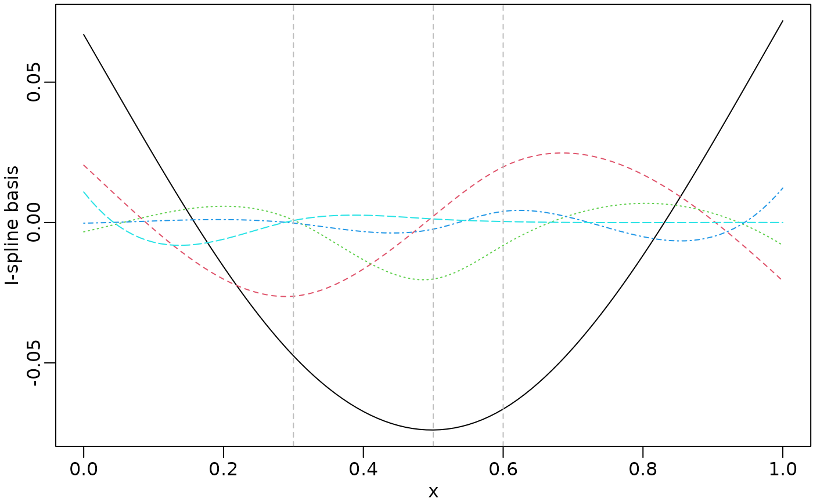
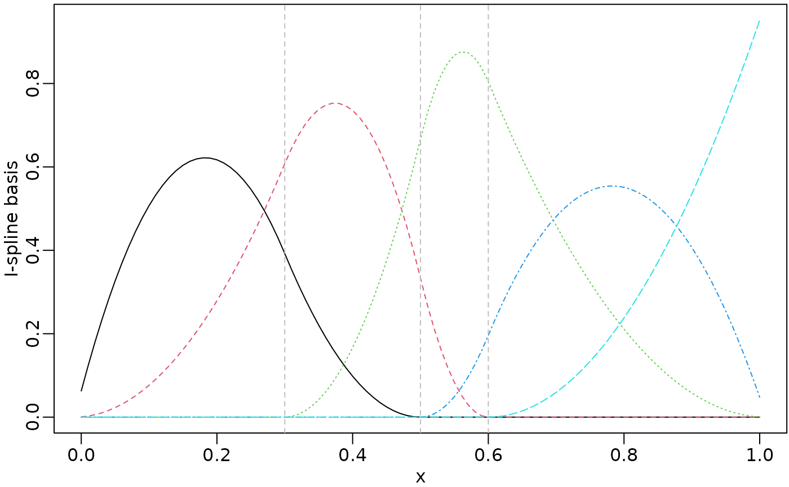
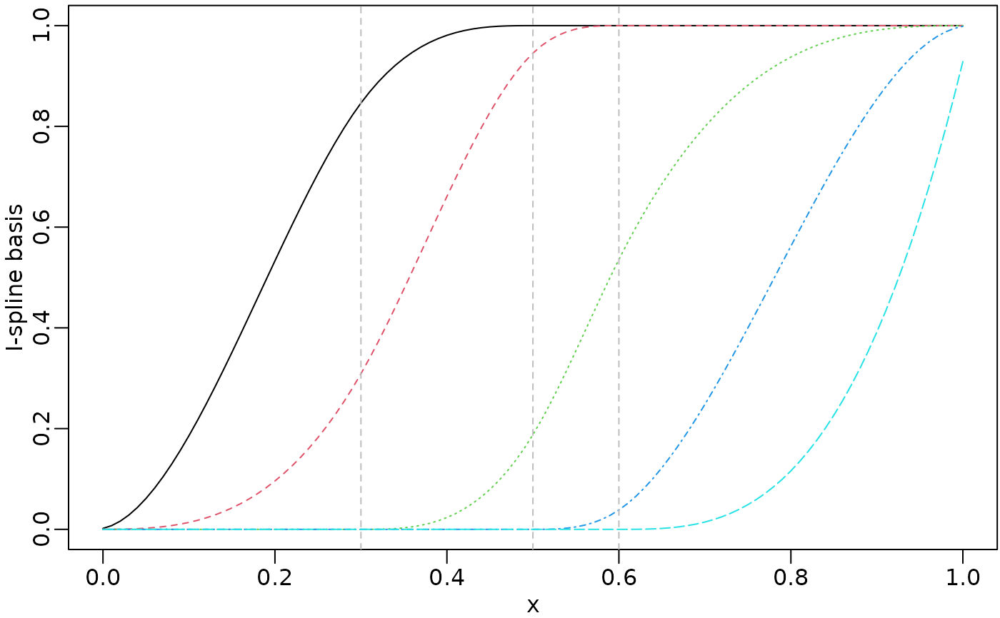

Constructs a sparse matrix (Z) of a spline function with for a covariate with(out) group.
Usage
smZ(x, k=6, intKnots=NULL, range.x=NULL, degree=3,
type=c("ZOSull", "Ztps", "ns", "bs", "bernstein", "bSpline",
"nSpline", "cSpline", "iSpline", "mSpline", "smspline"),
by=NULL, group=FALSE, intercept=FALSE, pred=FALSE, ...)Arguments
- x
x covariate for the smooth function. Missing values are allowed and will be returned as they are.
- k
Degree of freedom that equals to the column number of the returned matrix. One can specify df rather than knots, then the function chooses df - degree - as.integer(intercept) internal knots at suitable quantiles of x ignoring missing values and those x outside of the boundary. If internal knots are specified via knots, the specified df will be ignored.
- intKnots
Ordered array of length smaller than that of x and consisting of unique numbers between min(x) and max(x) that specifies the positions of internal knots, that define the spline basis (see the Wand and Ormerod (2008) reference below for full mathematical details).
- range.x
Array of length 2 such that range.x[1] >= min(x) and range.x[2] <= max(x).
- degree
Integer: degree of (truncated) polynomial.
- type
Type of splines including "ZOSull", "Ztps", "ns", "bs", "bernstein", "bSpline", "nSpline", "cSpline", "iSpline", "mSpline" and "smspline", the default is "ZOSull". Types "bernstein", "bSpline", "nSpline", "cSpline", "iSpline" and "mSpline" need package splines2, and "smspline" needs package lmeSplines.
- by
Factor for group wise splines.
- group
When
by != NULL, producing group wise splines with radom effects separately.- intercept
If TRUE, all of the spline basis functions are returned. Notice that when using I-Spline for monotonic regression, intercept = TRUE should be set even when an intercept term is considered additional to the spline basis functions.
- pred
If TRUE, the function
smZwill be applied for prediction purpose, this option mainly used by functionsemipredinternally.- ...
Further arguments for passing on to model setup routines, such as drv: either 0,1 or 2 with a default value of 0. If drv = 1 then the first derivatives of the O'Sullivan spline basis functions are computed instead. Similarly, if drv = 2 then the second derivatives are computed.
References
O'Sullivan, F. (1986). A statistical perspective on ill-posed inverse problems (with discussion). Statistical Science, 1, 505-527.
Examples
x <- seq.int(0, 1, by = 0.01)
knots <- c(0.3, 0.5, 0.6)
zosuMat <- smZ(x, intKnots = knots)
bsMat <- smZ(x, intKnots = knots, degree = 2, type="bs")
isMat <- smZ(x, intKnots = knots, degree = 2, type="iSpline")
splst <- list(zosuMat, bsMat, isMat)
for (i in splst) {
op <- par(mar = c(2.5, 2.5, 0.2, 0.1), mgp = c(1.5, 0.5, 0))
matplot(x, i, type = "l", ylab = "I-spline basis")
abline(v = knots, lty = 2, col = "gray")
## reset to previous plotting settings
par(op)
}



f <- gl(4, 25, length=length(x))
zosuMat_by <- smZ(x, intKnots = knots, by=f) # one sparse matrix
str(zosuMat_by)
#> Formal class 'dgCMatrix' [package "Matrix"] with 6 slots
#> ..@ i : int [1:505] 0 1 2 3 4 5 6 7 8 9 ...
#> ..@ p : int [1:21] 0 26 52 78 104 130 155 180 205 230 ...
#> ..@ Dim : int [1:2] 101 20
#> ..@ Dimnames:List of 2
#> .. ..$ : NULL
#> .. ..$ : NULL
#> ..@ x : num [1:505] 0.0669 0.0626 0.0583 0.054 0.0496 ...
#> ..@ factors : list()
#> ..$ range.x: num [1:2] -0.01 1.01
#> ..$ knots : num [1:3] 0.3 0.5 0.6
#> ..$ type : chr "ZOSull"
zosuMat_by <- smZ(x, intKnots = knots, by=f, group=TRUE) # a list of sparse matrix
str(zosuMat_by)
#> List of 4
#> $ 1:Formal class 'dgCMatrix' [package "Matrix"] with 6 slots
#> .. ..@ i : int [1:130] 0 1 2 3 4 5 6 7 8 9 ...
#> .. ..@ p : int [1:6] 0 26 52 78 104 130
#> .. ..@ Dim : int [1:2] 101 5
#> .. ..@ Dimnames:List of 2
#> .. .. ..$ : NULL
#> .. .. ..$ : NULL
#> .. ..@ x : num [1:130] 0.0669 0.0626 0.0583 0.054 0.0496 ...
#> .. ..@ factors : list()
#> $ 2:Formal class 'dgCMatrix' [package "Matrix"] with 6 slots
#> .. ..@ i : int [1:125] 25 26 27 28 29 30 31 32 33 34 ...
#> .. ..@ p : int [1:6] 0 25 50 75 100 125
#> .. ..@ Dim : int [1:2] 101 5
#> .. ..@ Dimnames:List of 2
#> .. .. ..$ : NULL
#> .. .. ..$ : NULL
#> .. ..@ x : num [1:125] -0.0329 -0.036 -0.0391 -0.042 -0.0448 ...
#> .. ..@ factors : list()
#> $ 3:Formal class 'dgCMatrix' [package "Matrix"] with 6 slots
#> .. ..@ i : int [1:125] 50 51 52 53 54 55 56 57 58 59 ...
#> .. ..@ p : int [1:6] 0 25 50 75 100 125
#> .. ..@ Dim : int [1:2] 101 5
#> .. ..@ Dimnames:List of 2
#> .. .. ..$ : NULL
#> .. .. ..$ : NULL
#> .. ..@ x : num [1:125] -0.0739 -0.0738 -0.0736 -0.0732 -0.0727 ...
#> .. ..@ factors : list()
#> $ 4:Formal class 'dgCMatrix' [package "Matrix"] with 6 slots
#> .. ..@ i : int [1:125] 75 76 77 78 79 80 81 82 83 84 ...
#> .. ..@ p : int [1:6] 0 25 50 75 100 125
#> .. ..@ Dim : int [1:2] 101 5
#> .. ..@ Dimnames:List of 2
#> .. .. ..$ : NULL
#> .. .. ..$ : NULL
#> .. ..@ x : num [1:125] -0.0293 -0.026 -0.0225 -0.019 -0.0154 ...
#> .. ..@ factors : list()
#> - attr(*, "range.x")= num [1:2] -0.01 1.01
#> - attr(*, "knots")= num [1:3] 0.3 0.5 0.6
#> - attr(*, "type")= chr "ZOSull"